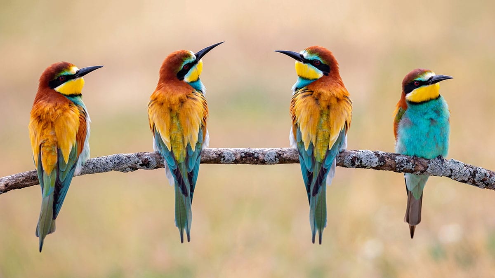

FLORA
Los Alcornocales, como bien dice su nombre, presenta la mayor masa de alcornoque de la Península Ibérica, la mojea,
que se desarrolla en ambientes soleados junto con abundantes madroños, labiérnagos y aladiernos; mientras que
en las umbrías alterna con el quejigo morisco y favorece la presencia de abundantes setas. En cotas bajas aparecen los
bujeos, pequeñas islas vegetales que conservan trazos de los antiguos bosques de acebuche que alternan con
brezos palmitos arrayanes cultivos.pastizales y vacas, tanto retintas como de Lidia.
El verdadero protagonista botánico del espacio natural es la laurisilva que se desarrolla en los canutos, un bosque
subtropical anclado en el tiempo. Los alisos que ocupan los rebordes del canuto impiden que la luz penetre en el
fondo del barranco, donde la humedad crea singulares masas de rododendro, laurel,ravellanillo, rdurillo, ralisos, racebos
y helechos poco comunes por estas latitudes.

FAUNA
La proximidad del Estrecho favorece la presencia de aves, pues hasta 18 rapaces y un buen número de pequeñospájaros surcan sus cielos o se cobijan en sus tajos. Pero serán anfibios y reptiles, la mitad de los que contabiliza la
Península Ibérica, y 11 tipos de murciélagos ocultos en sus grutas los que tengan mayor protagonismo. Mientras
que las cumbres son territorio de la cabra montés, los bosques participan de la presencia del corzo morisco, su
duende, que comparte hábitat con ginetas, tejones y meloncillos.
